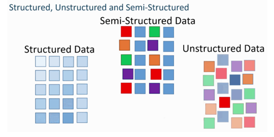

Los datos semi-estructurados o parcialmente estructurados son otra categoría entre los datos estructurados y no estructurados. Los datos semi-estructurados son un tipo de datos que tienen algunas características consistentes y definidas. No se limita a una estructura rígida como la necesaria para las bases de datos relacionales. Las propiedades organizativas como los metadatos o las etiquetas semánticas se utilizan con datos semi-estructurados para hacerlos más manejables; sin embargo, todavía contiene cierta variabilidad e inconsistencia.
Ejemplos de datos semi-estructurados
Un ejemplo de datos semi-estructurados son los archivos delimitados. Contiene elementos que pueden dividir los datos en jerarquías independientes. Del mismo modo, en las fotografías digitales, la imagen no tiene una estructura predefinida en sí misma, sino que tiene ciertos atributos estructurales que las hacen semi-estructuradas. Por ejemplo, si una imagen se toma desde un teléfono inteligente, tendría algunos atributos estructurados como geoetiqueta, ID de dispositivo y sello de fecha y hora. Una vez almacenadas, a las imágenes también se les pueden asignar etiquetas como 'mascota' o 'perro' para proporcionar una estructura.
En algunas ocasiones, los datos no estructurados se clasifican como datos semi-estructurados porque tienen uno o más atributos de clasificación. 
Bibliografia:
Lenguajes y Automatas 2. (2020). 2.2.2 Código P . 2021, de Blogspot Sitio web: https://equiponegro8.blogspot.com/2020/03/2_56.html
S/N. (S/N). UNIDAD II. 14/04/2021, de ITPN Sitio web: http://itpn.mx/recursosisc/7semestre/leguajesyautomatas2/Unidad%20II.pdf